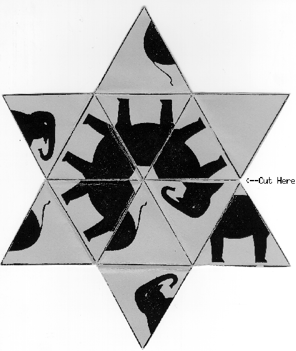

![[HOME]](ElPuz_files/home.gif) The Geometry Center Home Page
The Geometry Center Home Page

Note: cut only to the center of the hexagon, not all the way through.
The problem is to fold the above triangles into a tetrahedron so that the head, body, and tail of the elephant match up, and so that the remaining face is blank. The blank face can either be the actual blank triangle, or it can be the opposite face of one of the elephant-part triangles.
After finally being able to solve the puzzle, I thought of some additional questions:
Is there more then one head, body, tail combination?Phil saw this problem at a NCTM meeting in Minneapolis last year.
How many solutions are there if the blank side must be the blank face?
See also: Solution to the puzzle.
The Geometry Center Home Page
Comments to:
webmaster@www.geom.uiuc.edu
Created: June 28 1995 ---
Last modified: Jun 18 1996